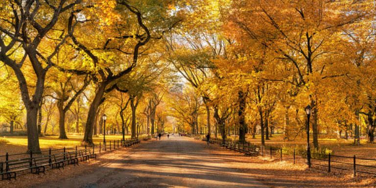
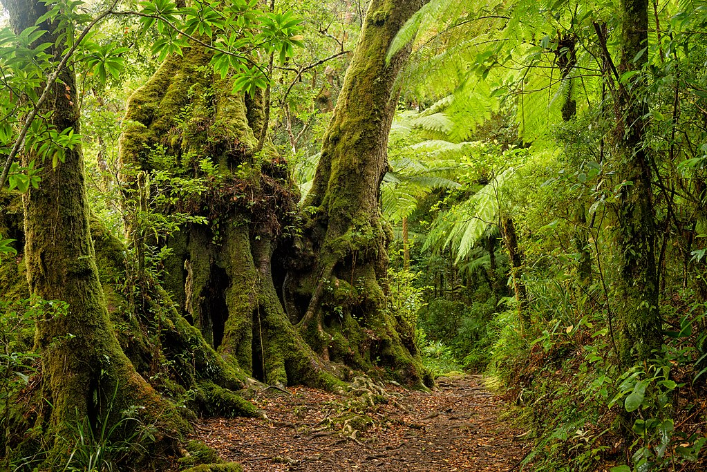
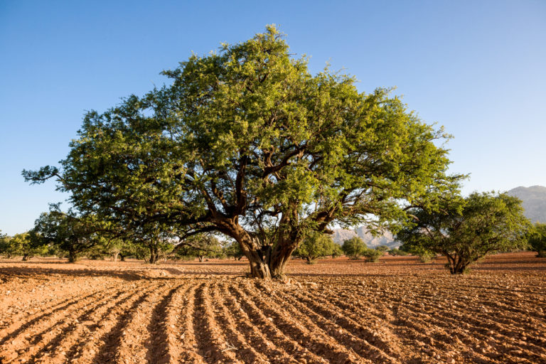
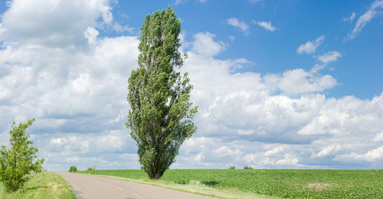

With its seasonal splendour, the American Elm is largely what has made New York’s Central Park so famous.
It is a deciduous hermaphroditic tree — which means the reproductive organs can be found on separate female and male trees, or one tree can have both parts.
They have a high, spreading, umbrella-like canopy and every year, they switch from lush green to a dazzling array of yellows and reds.

A staple of fire-free areas in southern South America and Australasia, only locations that are profoundly damp at all times can grow these gorgeous creations.
Thanks to their climate preference, they are perpetually draped in greenery that gives them their rugged and aged appearance.
In Australia, they are an important Gondwana relict that is found in many high altitude areas.

Argan trees are a genus of flowering plants that are endemic to the southern regions of Morocco and the region of Tindouf in southwestern Algeria. They grow up to ten metres and can live to 200 years.
And although they have gnarled trunks and are thorny, their branches lean towards the ground providing a great playtime opportunity for the local goats!

Aspen trees are native to cold regions with cool summers in the northern hemisphere. They typically reach a height of 15 to 30 metres and, in North America, are known as Quaking Aspens as their leaves tremble in the wind.
One of the most fascinating aspects of these trees is that they can stop fires from spreading. This is because of their higher water content and, unlike pine trees, they don’t have chemical compounds that make them more flammable. So when they are able to flourish, they create natural fuel breaks.